收录于合集
简 介
【作者】 霍尔格·阿尔布雷希特(Holger Albrecht)是阿拉巴马大学国际关系副教授。他的研究集中在中东和北非的文武关系、独裁政权和暴力国内冲突。费迪南德·艾布(Ferdinand Eibl)是伦敦国王学院中东研究系中东政治经济学讲师。他的研究集中在中东政治经济学、威权统治的政治经济学、分配政治和裙带资本主义。
【 编译】 陈舜波
【校对】 杨 洋
【审核】 蔡 宇；李代霓
【来源】 International Studies Quarterly, Volume 62, Issue 2, 1 June 2018, Pages 315–328, https://doi.org/10.1093/isq/sqx085
【期刊】 《国际研究季刊》(ISQ)是国际研究协会的核心期刊，它旨在引领学术界中的重要理论、经验、规范等主题。刊物由牛津大学出版社每年出版四次。
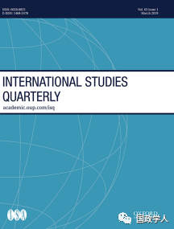
如何让军官留在军营：解析军事政变
How to Keep Officers in the Barracks: Causes, Agents, and Types of Military Coups
Holger Albrecht and Ferdinand Eibl
内容提要
防止军事政变最有效的策略是什么?这取决于政变主体，也就是说，谁试图推翻政权：精英军官（elite-officer）还是低层作战军官（combat- officer）？精英军官和低层作战军官在发动政变时有着不同的动机、机会和能力。本文通过对中东和北非地区政变机构、公共开支和军官薪水的原始数据进行分析，发现旨在为政变策划者的协调工作增加障碍的制衡策略，以及更高的国防开支份额，在防止精英军官发动政变方面更为有效。然而，更高水平的社会支出降低了战斗官员发动政变的风险。政治自由化对军事人员的影响好坏参半。它降低了战斗军官发动政变的风险，但增加了精英军官发动政变的可能性。我们的研究结果表明，对政变的研究需要更好地纳入变化性的因素，并且研究者们需要重新纠正以“纯粹由精英主导的权力争夺”定义政变的刻板印象。
文章导读
本文通过系统地比较不同类型的政变策划者留在军营的因素，以研究精英军官政变和作战军官政变之间的区别。并且对学界认为有助于预防政变的四种政策的效果进行检验，分别是： 军费开支；社会支出；独立作战、具备地面作战能力的军事单位的制衡；通过自由化实现政治开放。
本文的发现不但支持了理论预期和假设，而且完善了我们对政变现象和有效的预防策略的理解。 通过对四种政变的预防策略进行实证检验，本文揭示了社会支出和政治自由化可以构成有效的政变预防机制。
4月11日，苏丹发生了军事政变，军队占领了苏丹国家电视台，随后苏丹第一副总统宣布苏丹政府解散，总统下台。
**1
**
军事政变的理论框架
由于精英军官发动的政变与作战军官发动的政变之间存在差异，本节回顾了关于政变原因和防止政变机制的文献，特别强调政变主体。本文定义了一个精英军官政变是指由国家的军事领导人（包括参谋长、指挥委员会的军官和军事职能单位(陆军、空军、海军)的指挥官）发动的政变；军官政变是指由中下级作战军官策划的政变。后一类的策划者可能包括不是军事领导人的个别高级官员，例如将军或少校。两类政变其关键的区别在于，精英军官是独裁统治联盟的成员;而作战军官则不然。
通过对既有文献的阅读，作者发现，该文献体系存在两大弱点。首先，很少有研究系统地测试不同政变防范策略的有效性。而那些已经存在的研究结果又并不一致，有时甚至是相互矛盾的。其次，这些防政变文献未能系统地区分不同的政变代理人，从而将不同的政变类型混为一谈。下文中，作者为了区分军官的动机和执行政变的能力，把精英和作战军官区分为政变代理人，并将提出了一个关于防止政变措施的解释，并进一步阐述政变的原因。
假设 1:相对于其他政府机构，高水平的军费开支降低了精英军官政变的风险。
假设 2:每个士兵的高额军费开支降低了军官政变的风险。
从军官发动政变的个人动机分析，对于精英军官来说，军事预算是一种获取和控制资源并用于维持其在军队内部的赞助网络的手段。同时，他们也关心国防预算相对于政府开支中的其他预算项目，军事预算的相对规模决定了精英军官在政权内的议价能力。
与此相反，作战军官们认为服兵役主要是职业。相对于其他政府预算项目，他们很少关心军事预算的规模。相反，军事开支影响了他们的薪金和武器装备。如果军队的基础设施处于糟糕的状态，他们将是战斗中的受害者。
假设 3:社会支出降低了军官政变的风险，对精英军官政变没有影响。
虽然关于军民设施的研究文献在军事利益的假设中坚定地强调合作主义和等级制度，但非企业的不满仍然没有得到充分的理解。在一定程度上是因为它要求将“军方”分解，并考虑到该组织内个别代理人的利益和要求。此外，非军事的福利支出对低层作战军官不满情绪的影响常常被忽视。。
作为独裁统治联盟的一员，精英军官享有众多收入来源，这使他们处于高度特权的经济地位。而且，精英军官可以获得大量额外的收入来源。对于作战军官来说，情况则大不相同。作战军官充其量只是中产阶级的一员，极其依赖国家为他们和他们的家人提供社会福利。因此，与精英军官相比，作战军官从社会支出中获益更多。
假设 4:政治自由化增加了精英军官政变的风险，降低了战斗军官政变的风险。
虽然政治自由化努力扩大民间社会和精英军官成为政府文职成员的机会，但对精英军官来说仍然存在潜在的风险。政治自由化通常需要建立规范国家与社会关系的民间机构，包括政党、选举和议会。这种正式的文职机构损害了军官在统治精英中的地位，因为它们对军队的组织和预算进行了更严格的审查，同时还减少了官员相对于文职精英成员的影响力。相比之下，作战官员对自由化的偏好与普通公民类似。政治自由化应该能缓解他们在独裁体制下经历的政治不满。
假设 5:制衡降低了精英军官政变的风险，对战斗军官政变没有影响。
由于军事政变是集体行动的一种形式，精英军官和作战军官都需要相互协调才能实施阴谋。削弱政变策划者能力的一个突出战略是制衡，即创建具备地面作战能力的准军事组织，与常规武装部队一起自主运作。制衡建立了分散的安全环境，由正规部队和准军事部队组成。从政变策划者的角度来看，制衡降低了政变成功的可能性，因为增加了策划者和效忠者之间内讧的可能性。基于作者的假设，不同机构的政变是不同的，更普遍的防政变机制的有效性——尤其是制衡机制——取决于政变是由精英还是战斗官员发动的。作者认为，制衡对于阻止精英军官政变尤其有效。因为制衡为政变成为既定事实制造了一个至关重要的障碍，精英军官在克服这一障碍之前，很可能不会采取行动。而战斗人员的情况则不同。由于军事组织在个别战斗单位(营和旅)层面分散，因此在所有这些单位之间协调政变是不切实际的。因此，不论是否存在统一或分散的军事指挥结构，战斗人员都必须克服来自武装部队的抵抗威胁。
**2
**
实证分析
**
**
**
**
**
**
**
**
**
**
**
**
（检验过程请见文末原文）
**
**
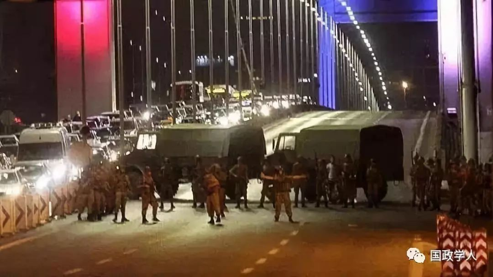
****土耳其时间2016年7月15日晚间，土耳其武装部队总参谋部部分军官企图发动军事政变。
**3
**
结 论
本文认为，精英军官和作战军官政变过程根本不同，因此防政变措施也根本不同。精英军官政变在很大程度上是由高级精英军官的政治野心和威权政权的内部动力推动的。因此，只有高额的军事预算和组织上的制衡才能有效防止政变。同时，政治自由化促使精英军官发动防御性政变，来恢复他们的权力和地位。然而，作战军官与普通公民相似。增加社会支出消除了他们策划政变的一些动机。政治民主化改革也降低了军官政变的风险。
作者指出需要注意的是，本文的观点仅适用于研究独裁政权的政变。在精英竞争已经制度化的民主国家，政变不太可能发生。本文研究结果对于更广泛的学术辩论，如独裁政权、军事政变和军民关系，具有重要的意义。精英军官政变往往会导致领导层发生变化，但不会导致威权机构发生重大转变。然而，军官政变往往会引发独裁政权在形式上和内容上更实质性的政治过渡。
此外，本文提出了对军队作为企业组织的更细致的理解。本文对通过对军方领导层的偏好和激励做出假设，来保持军方的制度利益不变这一方法提出挑战，并强调军队中存在着独特的利益集团。本文认为未来的学术应该继续从总体上分析军队，尤其是军事政变。
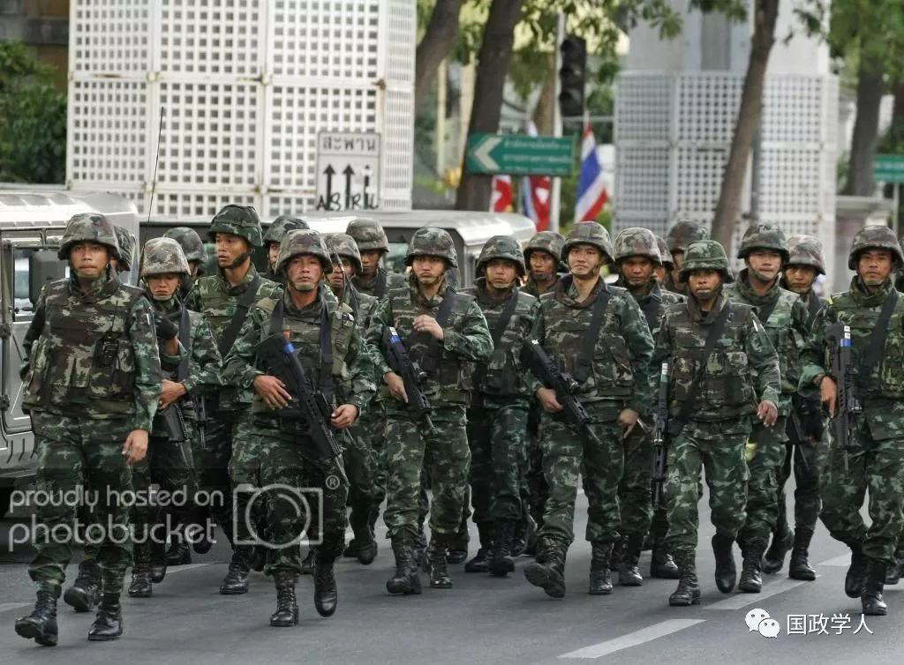
泰国当地时间2006年9月19日深夜，泰国皇家军队在泰国首相他信·西那瓦赴美国纽约出席联合国大会之际发动军事政变。
附：实证检验部分
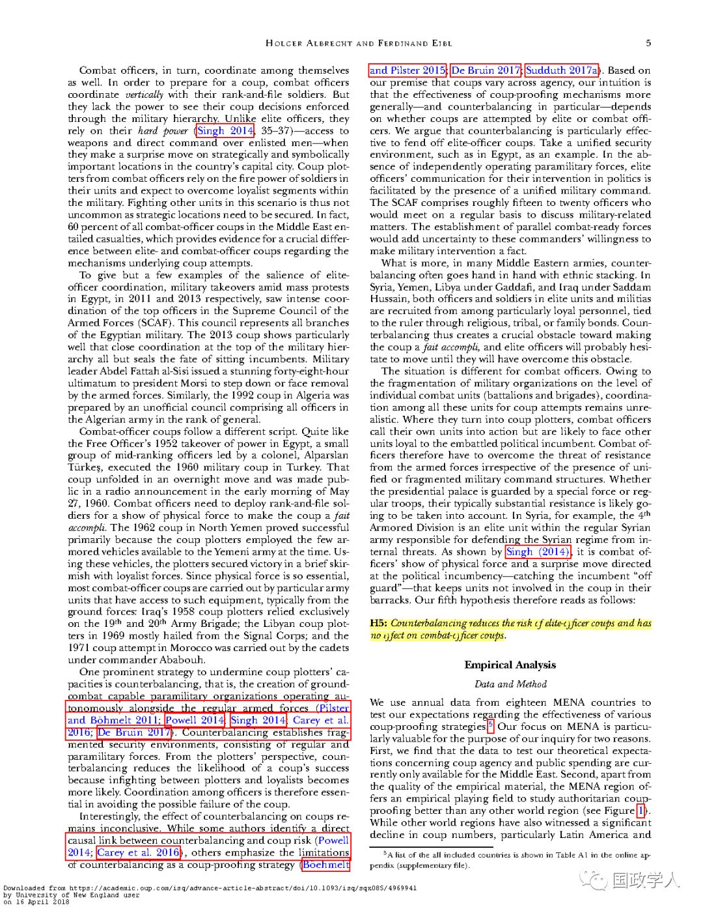
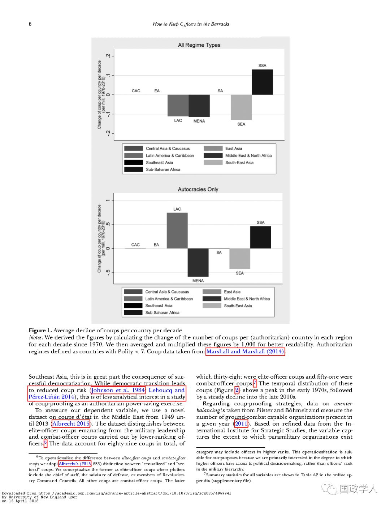
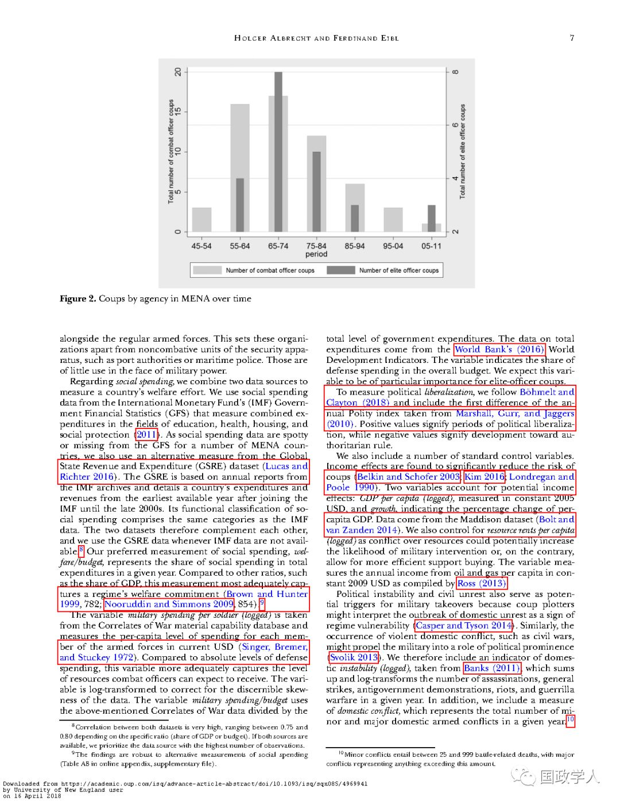
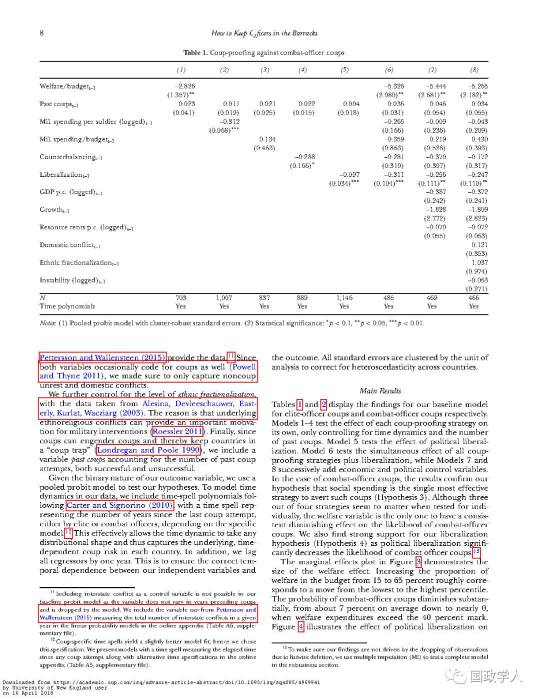
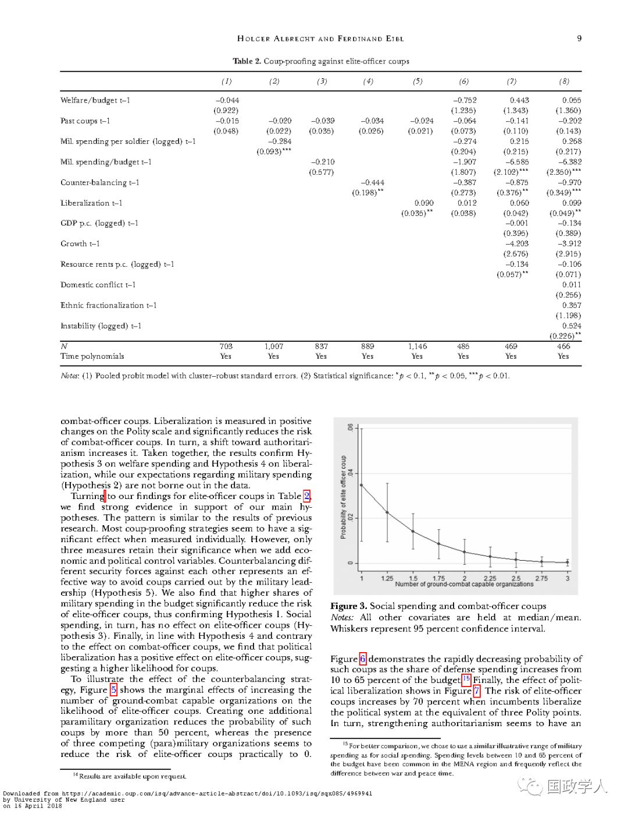
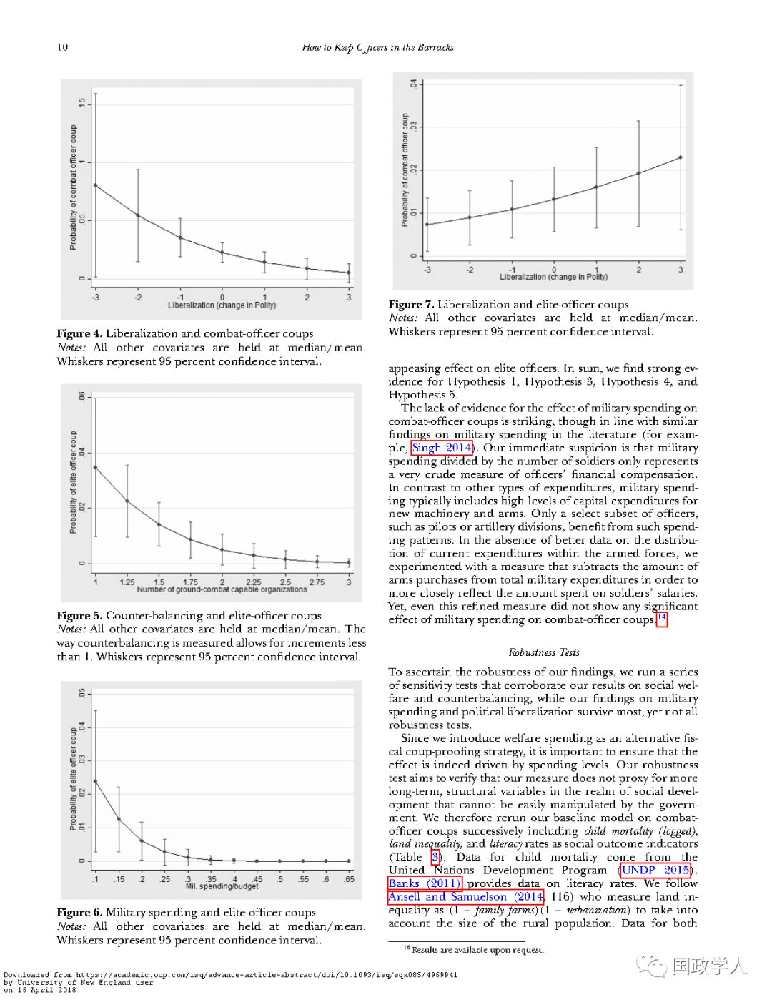
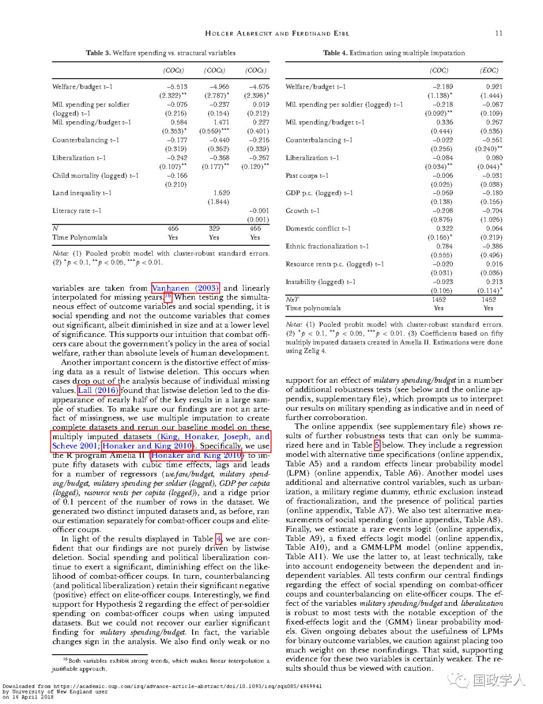
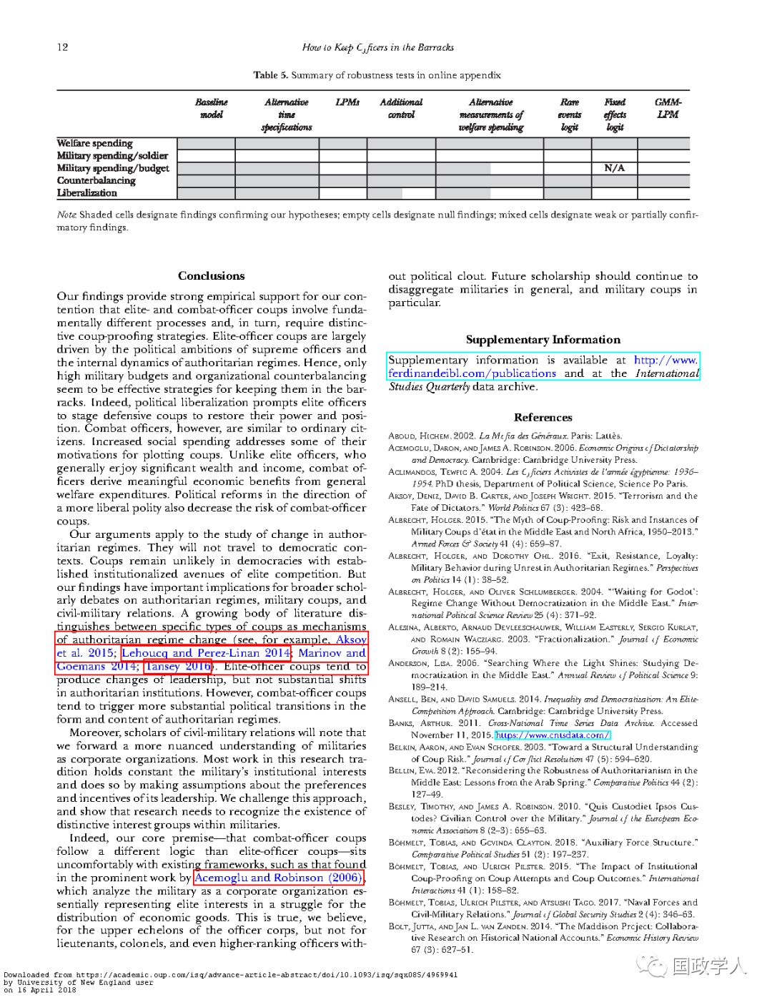
End
_ ** _ 本文由国政学人平台独家编译首发**
更多阅读
【重磅推荐】巴里·布赞：英国学派视角下的中国崛起 | 国政学人
【重磅速递】米尔斯海默：注定失败：自由主义国际秩序的兴衰 | 国政学人
【美国研究】IS杂志：为何美国的外交大战略如此稳定？| 国政学人
【英国脱欧】以欧盟为核心的多中心外交：脱欧后英国的欧洲外交战略 | 国政学人
【民族主义】江忆恩：中国的民族主义正在高涨吗？基于对北京群众的调查 | 国政学人
国政学人 （ID：guozhengxueren)
为方便学人及时阅读高质量文章
别忘把国政学人设置 星标 哦~